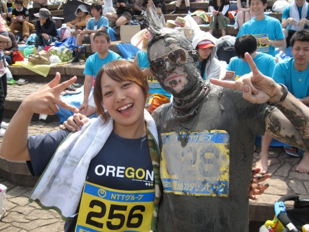
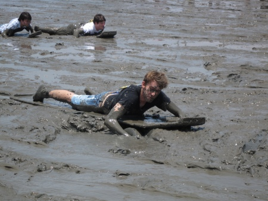
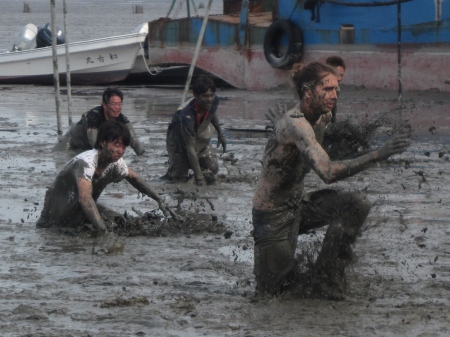
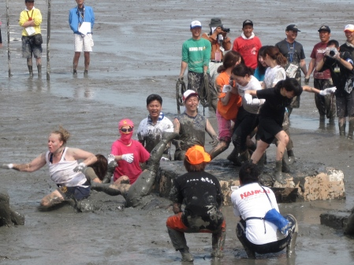

Living the Dream at the Gatalympics
Mud and I go way back. My big present from my parents for my fifth birthday was in fact a big pile of dirt. It was a rather large pile mind you, but still, that was it. To this day it is probably the present that ended up bringing me the most enjoyment of any I have received since. I spent countless hours building fortresses for action figures and digging tunnel systems as deep as my tiny 5 year-old hands could reach. Being sprayed down with the garden hose before being granted entry to the house became a daily ritual. Perhaps it was destiny then that some 22 years later I would find myself once more having copious amounts of mud hosed off me, albeit this time it was with a fire hose.
The reason for these flashbacks to yesteryear as I braced against the slight sting of the fire hose? Why only the modern miracle that was the 2009 Gatalympics on the Ariake coast near Kashima city in Saga prefecture. Technically speaking the Gatalympics is a “sporting event”, and while I don’t wish to deny the athletic achievements of my friends who triumphed there, what the Gatalympics were really about was giving people a (ridiculously) good excuse to get as absolutely filthy as they’ve always (or hadn’t even realized that they) wanted. Apparently the event was originally created back in 1984 as a means to boost tourism in the region after it was decided that the town area was too small to justify a major stop on the express train of the JR line passing through the area. In Japan that’s basically a permanent sentence of inaka-hood and so the local powers that be needed to think up a way to attract folks to the region along with their economic bubble filled wallets. Well, the one thing that Kashima has more of than anywhere else in Japan is mud thanks to the expansive mud flats on the Ariake Sea. Thus was devised the (truly) brilliant Gatalympics consisting of a series of events ranging from rather obvious, “25 Meter Mud Dash”, to are-you-serious-that’s-freaking-amazing, “Ladies’ Sumo”. Here’s a quick rundown of the days activities.
{kind=link}
The main event of the Gatalympics is an obstacle course of sorts where contestants have to race through the mud, climb across slippery Styrofoam boxes, and race to grab a flag at the end in a certain allotted time. Sadly, I personally did not get to participate in the mudspackled mêlée that ensued. I am however pleased to say that the winner’s flag was snagged by none other than Nagasaki’s very own Mr. Skye Lee who finished rather ridiculously far ahead of everyone else.
{kind=link}
Aside from the obstacle course, there were a number of other jaw dropping events including the aforementioned 25 meter dash, a tug of war type event (that my team was a near definition of failure at), a rope swing launch, a mud skipper themed wooden plank assisted paddling race, a find the ball in the mud type game for the wee ones, a brake-less bicycle race along wooden planks, and of course, everyone’s favorite, the female “sumo” tournament. These events ranged from actual physical endurance tests (running through knee deep mud ain’t easy my friend), semi dangerous, (the bikers who fell not into the soft, pillowy mud, but instead into the wood of the raceway looked none too pleased), mildly abusive (a couple of the toddlers involved in the ball grabbing event were not happy campers), and fiercely awesome (again ladies’ sumo should be the clear winner here).
{kind=link}
Throughout the fest, mini gangs of TV camera crews skittered about from place to place interviewing contestants while trying to keep a safe distance themselves. As one would guess, we of the foreign persuasion were favorite victims of these マスコミ packs. How many times did I find myself grinning widely revealing my white teeth to be the part of my face not spackled in mud and giving the cameras a big thumbs up and a “楽しいぞ！気持ちいい！” When I discovered that the mud made a great Mohawk gel I ended up with a veritable queue of folks lining up to have their picture taken with me. I’m sure that many of our joyful faces appeared in Newspaper articles and news stories throughout the island after that day. If for some reason you were unable to attend the event this year, do whatever you have to next year to make it down there. The “only in Japan” factor on the Gatalympics for me surpasses even that of gawking at the lady lolitas of Harajuku for sheer WTF-ness. Add in the benefits to your skin of a full day mud bath, and no matter which way you look at it, this day is a “win”.
{kind=link}
-Andrew Morris